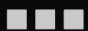

12/5/2024 09:08
I added the bookmarks page! And the font sources i use are there if you wanna check it out!
As you approach the computer, you notice another note, saying that the links shown
will most likely lead to nowhere, since this space is being rebuilt.
Knowing that, you boot up the computer and hear a buzz from the CRT.
After a few seconds, a log appears, in delightful amber, of changes done to this space
by the webmaster.
I added the bookmarks page! And the font sources i use are there if you wanna check it out!
I'm removing the fonts page and just putting the websites from where i got the fonts in a bookmark folder when i make the page.
Started making a font room, for all the free fonts we've collected so far!
Added back the button page. now the section with our buttons is pink!
I added back the about page, and also a marquee! First time there was one on this site
We're doing redesign number 8 by my count now! much simpler things, and back with the sidebar now.
Added notebook no.14, the biggest one with 70 drawings. Also i feel like experimenting with css again, so expect changes in some places.
Added notebook no.16! Also i'm working on a dingus weather thing, i might put it here
Added back the words page!!! All page blocks are back!!!!!!
Added back the doodles page, just notebook 15, will prob add 16 and ibisPaint doodles soon.
Added back the blender renders page, with a bunch of new renders!
Added back the bookmarks page! I'm also updating the anti-racism collection more often now, tons of new stuff.
Added back the about page, with more stuff about me than ever h
Added buttons back to the homepage, and 2 88x31 buttons. And happy new year ig
Added back the misc page, with a bit of new stuff. Next on the operation is the blender renders.
BACK TO ANOTHER REDESIGN! The main theme is arrows now, with 1px borders and stuff.
It's been exactly a month wow... anyways, i added ibisPaint doodles
because i do do them every once in a while
also i rerere...made our 88x31 button!
Added a bookshelf page that i've been wanting to add for a while, to show some books about race that i've read/am reading.
Added back doodles page, with the important doodles from notebook #15.
Did some changes to hopefully make the site more accessible to screenreaders. If it's still hard to navigate, please tell me!! Also i'm sorry-
Added back the blenders page with icossymetry, buttons and all 8 cmyks.
Added back buttons page, now with a johnvertisement again! I think i'm gonna work on favicons and buttons now.
Added bookmarks and the misc and sitelog pages to the index.
Finished (somewhat) transitioning the misc pages to yet another redesign (but not put them in the index yet)! As well as this sitelog.
Added a bookmarks page (replacing websites) with raindrop collections instead of manually adding links. Mostly added for the anti-racism resources collection (please check it out!)
Added some texts back on words!
Added my button(s) to the button page.
Readded the blender page with the icossymetry images!
Added about, button and 404 pages.
Started another redesign, with just the index, the status.cafe and this sitelog.
Started working on the website again a few days ago! Just finished the misc page and now the sitelog.
Finished the 5th redesign and added stuff to the folder!
Changed half of the site fonts and some colors to Work Sans, will be done tomorrow (hopefully)
Changed the homepage back to the sidebar design and put the old one in the folder. Also added license info for the icons and fonts (in the "more about the site" dropdown)
I added the sidebar back to (most) of the pages!
I've added a blog thing! It only has one entry, but (hopefully) i'll write more for it in the future.
The redesign is finally done!!!
I'm redesigning the site, this time with mobile in mind (wow!) and in light mode! It's gonna be ready sometime in the future!
I finally made a new words thing!
I moved the status.cafe thing to the index, where it always should have been.
I've added a new section called blips, for some shorter things I've written!
Changed the doodles to get bigger when you hover over them!
Added a section to the about me page with some quick info... about me
Changed the intro page to be more simplistic and removed the sidebar.
Changed the website style to a blue/yellowish theme! Much better than the boring blacks and greys. Also i added an arrow to the sidebar so it's easier to tell what page you're in!
Made the doodle things smaller in resolution so they (hopefully) load faster!
I changed the css of my status.cafe to its own thing! It was supposed to look like a typewriter... kinda. This isn't really a site update, but this is the best place i could put this.
Greatly embiggened the musicians page, now with bigger and better (hopefully) descriptions! Also i kinda wanna remake this site a bit!
New doodles! Also, happy october! Also I changed the theme for this log to amber and it looks AWESOME!!!!
I changed nimi mute to words now that there are a couple english things there!
I wanted to change the layout a tad, and now it's finally done! Yayyyy
I have a guestbook now! If you've got any feedback to give or any questions, you can say them there.
More drawings added to doodles, also now put into categories instead of on a list.
Added some drawings to doodles and added a new miscellaneous page for things that have no other place that i can put them.
I've added another new page for me to put drawings, which i make a bunch of. However, it doesn't have much there currently. Hopefully it will in the future.
There is now a new page dedicated to showcasing buttons other people made that lead to their websites, as well as embedding the curly brackets within the css, so i don't have to add in needlessly long spans.
Some "new" blender cmyk things! (Actually i added them a bit ago but removed them)
Created the {basement} section of the website and added, for the very first time, a johnvertisement. Now that i have a section of the website that is solely dedicated to hot having a theme (or having a theme that matches rather well with other themes), things like this are fit for it.
Just added a new section called {i}. Whenever i feel like making something that doesn't fit the vibe of the rest of the website, i'll put it there, whatever it may be. Also, it has it's own changelog, so anything that changes there will be there, not here. Again, whole different vibe.
I made a couple buttons. 
I moved the navigation thingy to the top of the page so it doesn't mess up much with the centering!
I changed the font in the words section to Atkinson Hyperlegible, because the previous font's legibility sucked. I can even read it without glasses. The power of design.
I now have a status.cafe thing after it decided not to give me the confirmation email darnit. I tried to put it at the start but it didn't seem to work and here seemed more appropriate.
I might have added a bit too much but it's done now!
I just added a little box to help navigating through the site easier. Just a couple more things and i'll be done...
Alright, i'm done remaking the site! Not fully, there's still some things i want to do, but it's already better, i think.
It's been a while since i've reinstalled Ubuntu, but i'm back and made another little poem! Also i feel like changing the layout again...
I added a new toki pona poem thing.
Ok so, i made all links bold from the css files, but that meant having to remove almost ALL the bold tags from all the pages... That took 50 minutes?? jeez...
I added some more blender things with purple/blue and yellow pyramids.
Changed the index layout some. I think it's better.
I just added the blender images and now this log so i can keep better track of what i've added to the site. Also i feel like restructuring the site, the list format isn't working, i think.